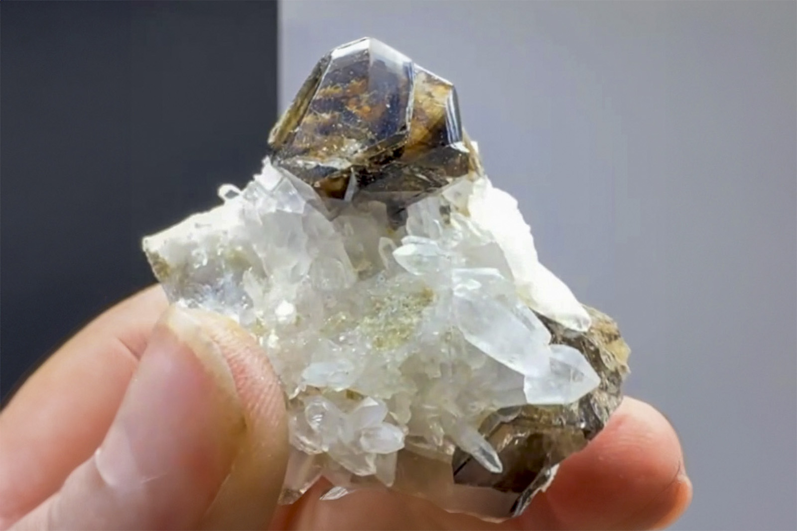

Cassiterite on Quartz Matrix
"Lustrous, Transparent Cassiterite on Quartz"
III-10800
Amo Sn deposit, Ximeng County, Pu'er, Yunnan, China
Mined by Christensen Mineral Connection
Purchased 7/19/2026 from Most High Minerals for $300.00 (Core Collection)
Details
Storage Type: Unassigned
Storage Location: 000 None
Size class: TBD (0)
Dimensions: 4.3 × 3.7 × 2.0 cm
Mass: 33 g
Luster: Unrecorded